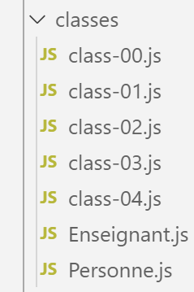

13. Clases

Aquí introducimos las clases de ECMAScript 6. En primer lugar, mostramos que las funciones ya se pueden utilizar como clases.
13.1. script [class-00]
El siguiente script demuestra un uso inusual de las funciones. Aquí, se utilizan como objetos.
'use strict';
// a function can be used as an object
// an empty shell
function f() {
}
// to which properties are assigned from the outside
f.prop1 = "val1";
f.show = function () {
console.log(this.prop1);
}
// using f
f.show();
// a function g acting as a class
function g() {
this.prop2 = "val2";
this.show = function () {
console.log(this.prop2);
}
}
// Instantiate the function with [new]
new g().show();
Comentarios
- líneas 5-7: el cuerpo de la función f no define ninguna propiedad;
- líneas 9-12: se asignan propiedades a la función f desde fuera;
- línea 14: uso de la función (objeto) f. Observa que no escribimos [f()] sino simplemente [f]. Esta es la notación para un objeto;
- líneas 17-22: definimos una función [g] como si fuera una clase con propiedades y métodos;
- línea 24: la función [g] es instanciada por [new g()];
Resultados de la ejecución
[Running] C:\myprograms\laragon-lite\bin\nodejs\node-v10\node.exe -r esm "c:\Data\st-2019\dev\es6\javascript\classes\class-00.js"
val1
val2
ES6 introdujo el concepto de clases, que ahora nos permite evitar el uso de funciones para crear clases.
13.2. script [class-01]
El [class-01] script presenta una [Persona] class:
// class
class Person {
// constructor
constructor(lastName, firstName, age) {
this.lastName = lastName;
this.firstName = firstName;
this.age = age;
}
// getters and setters
get name() {
return this._name;
}
set name(value) {
this._name = value;
}
get firstName() {
return this._first_name;
}
set firstName(value) {
this._first_name = value;
}
get age() {
return this._age;
}
set age(value) {
this._age = value;
}
// toString as JSON
toString() {
return JSON.stringify(this);
}
}
// Call the class
function main() {
const person = new Person("Poirot", "Hercule", 66);
console.log("person=", person.toString(), typeof(person), person instanceof(Person));
}
// call to main
main();
Comentarios
- línea 2: la palabra clave [clase] denota una clase;
- líneas 5-9: la palabra clave [constructor] denota el constructor de la clase. Puede haber como máximo uno. Se utiliza para construir e inicializar una instancia de la clase. Nótese que no hay declaración de las propiedades [apellido, nombre, edad];
- líneas 11-36: propiedades de la clase. Aquí vemos elementos ya tratados en la sección de objetos 4, página 44. Sólo difiere la sintaxis;
- línea 41: creación de un objeto de tipo [Person]. A partir de ahora, el objeto [persona] se utiliza como objeto literal. [typeof (persona)] evalúa a "objeto" y la expresión [persona instanceof (Person)] es verdadera. Por lo tanto, es posible determinar el tipo exacto de una instancia de clase;
Resultados de la ejecución
[Running] C:\myprograms\laragon-lite\bin\nodejs\node-v10\node.exe -r esm "c:\Data\st-2019\dev\es6\javascript\classes\class-01.js"
person = {"_lastName":"Poirot","_firstName":"Hercule","_age":66} object true
13.3. script [class-02]
Este script demuestra la capacidad de heredar de una clase utilizando la [extends] palabra clave.
Primero, movemos la clase [Persona] a un módulo llamado [Person.js]:
// class
class Person {
// constructor
constructor(lastName, firstName, age) {
this.lastName = lastName;
this.firstName = firstName;
this.age = age;
}
// getters and setters
get lastName() {
return this._lastName;
}
set name(value) {
this._name = value;
}
get firstName() {
return this._first_name;
}
set firstName(value) {
this._first_name = value;
}
get age() {
return this._age;
}
set age(value) {
this._age = value;
}
// toString as JSON
toString() {
return JSON.stringify(this);
}
}
// export class
export default Person;
- línea 39: exportamos la [Persona] clase para que los scripts puedan importarla;
El [clase-02] script crea una [Profesor] clase derivada de la [Persona] clase:
// imports
import Person from './Person';
// class
class Teacher extends Person {
// constructor
constructor(lastName, firstName, age, subject) {
super(lastName, firstName, age);
this.subject = subject;
}
// getters and setters
get discipline() {
return this._discipline;
}
set discipline(value) {
this._discipline = value;
}
}
// call the class
function main() {
const teacher = new Teacher("Poirot", "Hercule", 66, "detective");
console.log("teacher=", teacher.toString(), typeof (teacher), teacher instanceof Teacher);
}
// call to main
main();
Comentarios
- línea 2: importamos la [Persona] clase del [Person.js] módulo, que se encuentra en la misma carpeta que [class-02];
- línea 5: la [Profesor] clase extiende (hereda de) la [Persona] clase utilizando la [extiende] palabra clave: añade una [_sujeto] propiedad con los correspondientes métodos getter y setter;
- líneas 8-11: el constructor de la [Profesor] clase recibe cuatro valores para inicializar las cuatro propiedades de la clase;
- línea 9: la palabra clave [super] llama al constructor de la clase padre [Persona], que, por tanto, inicializará las propiedades [apellido, _primer_nombre, _edad];
- línea 10: se inicializa la [_disciplina] propiedad perteneciente a la [Profesor] clase;
- líneas 14-19: el getter y setter para la [_disciplina] propiedad;
- línea 25: se crea un objeto de tipo [Profesor] ;
- línea 26: utilizamos el método [profesor.toString()]. La clase [Profesor] no tiene este método. Por lo tanto, se utiliza automáticamente el método de su clase padre. Este método devuelve la expresión [JSON.stringify(this)], donde [this] será aquí un [Profesor] objeto, no un [Persona] objeto. Esto es lo que en programación orientada a objetos se conoce como polimorfismo de clases. Palabras mayores para JavaScript, que no es un lenguaje orientado a objetos. No obstante, JavaScript hace aquí lo que se espera de él: muestra correctamente un profesor;
Los resultados de la ejecución son los siguientes:
[Running] C:\myprograms\laragon-lite\bin\nodejs\node-v10\node.exe -r esm "c:\Data\st-2019\dev\es6\javascript\classes\class-02.js"
teacher = {"_last_name":"Poirot","_first_name":"Hercule","_age":66,"_profession":"detective"} object true
- línea 2: JavaScript reconoce correctamente que la variable [profesor] es de tipo [Profesor];
13.4. script [class-03]
El [clase-03] script muestra que una clase hija puede anular propiedades y métodos de su clase padre. Aquí, sobrescribimos el [toString] método de la clase padre:
// imports
import Person from './Person';
// class
class Teacher extends Person {
// constructor
constructor(lastName, firstName, age, subject) {
super(lastName, firstName, age);
this.subject = subject;
}
// getters and setters
get discipline() {
return this._discipline;
}
set discipline(value) {
this._discipline = value;
}
// redefinition of toString
toString() {
return "[Teacher]" + JSON.stringify(this);
}
}
// Call the class
function main() {
const teacher = new Teacher("Poirot", "Hercule", 66, "detective");
console.log("teacher=", teacher.toString(), typeof (teacher), teacher instanceof Teacher);
}
// call to main
main();
Los resultados de la ejecución son los siguientes:
[Running] C:\myprograms\laragon-lite\bin\nodejs\node-v10\node.exe -r esm "c:\Data\st-2019\dev\es6\javascript\classes\class-03.js"
teacher = [Teacher]{"_last_name":"Poirot","_first_name":"Hercule","_age":66,"_profession":"detective"} object true
13.5. script [class-04]
El [clase-04] script demuestra de nuevo el polimorfismo en acción: donde una función espera un parámetro formal de tipo [Persona], podemos pasar un tipo derivado como [Profesor]. En efecto, en virtud de la derivación, el tipo [Profesor] tiene todos los atributos del tipo [Persona] .
Primero, aislamos el [Profesor] tipo en un [Profesor.js] módulo:
// imports
import Person from './Person';
// class
class Teacher extends Person {
// constructor
constructor(last_name, first_name, age, subject) {
super(lastName, firstName, age);
this.subject = subject;
}
// getters and setters
get discipline() {
return this._discipline;
}
set discipline(value) {
this._discipline = value;
}
}
// export class
export default Teacher;
- línea 24: la [Profesor] clase se exporta para que otros scripts puedan importarla;
El [class-04] script es el siguiente:
// imports
import Teacher from './Teacher';
import Person from './Person';
// function accepting a person as a parameter
function show(person) {
// in all cases
console.log("parameter=", person.toString(), typeof(person));
// instance of Person
if (person instanceof Person) {
console.log("person=", person.toString());
}
// instance of Teacher
if (person is an instance of Teacher) {
console.log("teacher=", person.toString());
}
}
// Call show with a Teacher
show(new Teacher("Poirot", "Hercule", 66, "detective"));
show(new Person("Marple", "Miss", 70));
- línea 6: la [show] función espera un [Persona] tipo o un tipo derivado;
- línea 8: se muestra la cadena del parámetro y su tipo. Encontraremos [objeto];
- líneas 10-16: podemos determinar si se trata de un [Persona] tipo o de un [Profesor] tipo. Por tanto, el código puede adaptarse al tipo real del parámetro;
Los resultados de la ejecución son los siguientes:
[Running] C:\myprograms\laragon-lite\bin\nodejs\node-v10\node.exe -r esm "c:\Data\st-2019\dev\es6\javascript\classes\class-04.js"
parameter= {"_last_name":"Poirot","_first_name":"Hercule","_age":66,"_profession":"detective"} object
person = {"_last_name": "Poirot", "_first_name": "Hercule", "_age": 66, "_profession": "detective"}
teacher = {"_last_name":"Poirot","_first_name":"Hercule","_age":66,"_profession":"detective"}
parameter = {"_last_name": "Marple", "_first_name": "Miss", "_age": 70} object
person= {"_last_name":"Marple","_first_name":"Miss","_age":70}
- líneas 4 y 6: JavaScript reconoce correctamente el tipo de instancias de clase;